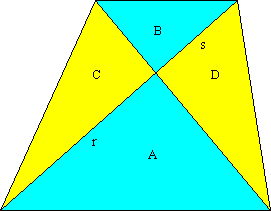

Solution to puzzle 55: Area of a trapezoid
We will use the fact that the area of a triangle is equal to ½ × base × perpendicular height. Any side can serve as the base, and then the perpendicular height extends from the vertex opposite the base to meet the base (or an extension of it) at right angles.
Consider the triangles with base r and s, and area C and B, respectively.
These triangles have common height and colinear base; therefore r/s = C/B.
Similarly, r/s = A/D.
Hence AB = CD.
Now consider the triangles with area A + C and A + D.
These triangles have the same base and common height; hence A + C = A + D, and C = D.
Hence C = D = .
| Therefore the area of the trapezoid is A + B + C + D | = A + B + 2. |
| = ( + )2. |
Source: Triangles in a Trapezoid, on InterMath | Investigations | Geometry | Quadrilaterals | Additional Investigations